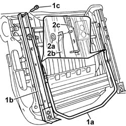

7045A29 seat slide control lever - r r
- Path
- Procedures > 70 FITTINGS > 7045 FRONT SEATS > 7045A front seat assembly > 7045A29 seat slide control lever - r r
- Kind
- repair procedure (removal / refitting; the operation number is the code)
- Applies to
- all engines; all production periods
- Interactive page
- https://sloeber94.github.io/elrnDB-fDbl/en/#/2585171
Applies to: all engines; all production periods
 Removing
Removing
 Refitting
RefittingOp. 7045A10 FRONT SEAT (ONE), LEFT OR RIGHT - R.R.
1. Use a slide control lever (1a) to move guide (1b) in order to unscrew retaining bolts (1c).
2. Remove retaining clip (2a) and separate slide control lever (2b) from the slide guide (2c).

Applies to: all engines; all production periods
Refitting
RemovingFit the slide control lever and secure to the guide on the seat using the retaining clip.
Position the remaining slide guide and secure to the slide control lever using the retaining clip.
Tighten the guide retaining bolts to torque.
 | Fastening | Component | Ø | Value (daNm) |
|---|---|---|---|---|
- | Bolt | FRONT SEAT GUIDE. | - | 1.5 |